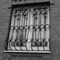

Выбор оконных решеток
Решетки для окон не только обеспечат безопасность вашего жилья, но и сформируют стиль фасада. Если для вас важно найти наилучшую комбинацию функциональности и декоративности, наш материал поможет вам разобраться в видах конструкций, типах и характеристиках оконных решеток.
Виды решеток для окон
{kind=link}
{kind=link}
{kind=link}
{kind=link}
{kind=link}
Самым изысканные по исполнению. Завитки и кружева выдерживаются в одном стиле с другими элементами ландшафтного дизайна участка или с художественным оформлением карнизов, балкона или ворот. Эти решетки производятся эксклюзивно для каждого отдельного случая.
{kind=link}
{kind=link}
{kind=link}
{kind=link}
{kind=link}
Типы конструкций и материалы оконных решеток
Решетки для окон создаются из разных профилей, сделанных из металла. Соответственно, нужно определиться с типом конструкции. Различают такие оконные решетки:
- 1Из небольших прутов с квадратным либо круглым сечением. Они самые прочные, за счет своей толщины, которая составляет 12-20 миллиметров
- 2Из полосок с прямоугольного сечения. Данные профили обойдутся вам дешевле, но они характеризуются меньшей надежностью.
Технология монтажа
Процесс монтажа решеток, по сути, одинаковый и для сварных, и для кованых решеток. Метод крепежа подбирается зависимо от функциональных характеристик решеток. Решетки могут быть распашными, стационарными, съемными или раздвижными. Определитесь с оптимальным способом крепления, который подойдет для ваших оконных систем и приступите к установке.
Стационарные решетки - эти решетки, которые не предусматривают возможность открывания. Соответственно, они закрепляются наиболее прочно.
В торцах окна нужно высверлить отверстия под крепежи для решетки. Зависимо от линейных размеров креплений, поперечник отверстий также колебаться от 12 миллиметров, до 20 миллиметров.
Далее решетка закрепляется ко всем 4-ем сторонам проема окна посредством специализированных крюков-штырей, которые прижимают изделие к капитальным стенам дома.
Распашные решетки открывается (работает одна либо две створки).
Крепеж такой решетки производится только в боковых сторонах проема окна по технологии, которая уже описана выше. В процессе крепления распашных решеток используют тяжелые петли, которые способны выдерживать существенную нагрузку.
Раздвижные оконные решетки устроены по принципу пантографа (раздвижного механизма).
При установке, нужно прикреплять полозы (направляющие шины оконных решеток) к торцам проема оконной системы для свободного хода конструкции в процессе раздвигания. После этого решетку вставляют в созданную раму.
Следует обратить внимание, что у раздвижных оконных решеток есть и свои недостатки: конструкция из клепанной крест накрест полосы несколько снизит защитные свойства и жесткость конструкции.
Съемные оконные решетки устанавливаются в междуоконный проем.
Обрамление оконной решетки не нуждается в дополнительной защите. Потому оно может закрепляться не крюками, а в винчивающимися стальными болтами.